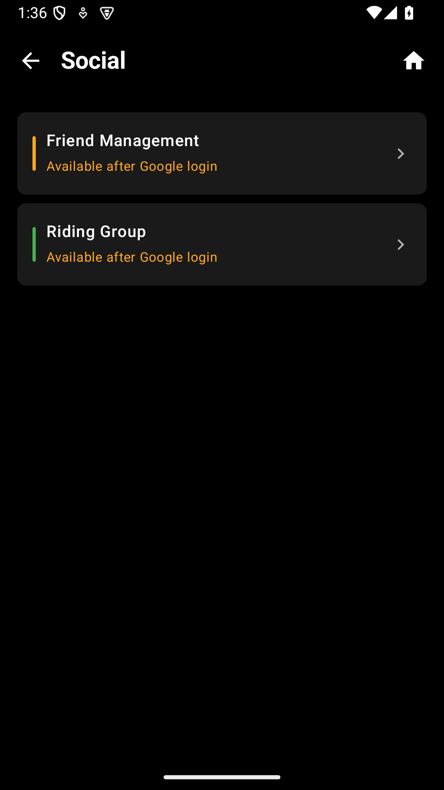

8. 소셜 기능
함께 타는 즐거움을 더해 주는 소셜 기능입니다. 친구를 추가하고, 그룹을 만들어 함께 라이딩하세요.

소셜 기능을 이용하려면 Google 계정으로 로그인해야 합니다.
8.1 친구 관리
설정 → 소셜 → 친구 관리에서 친구를 추가하고 관리합니다.
내 친구 코드
6자리 영문 대문자 코드가 자동 생성됩니다. 이 코드를 친구에게 공유하세요.
친구 추가 방법
- 친구 추가 버튼을 탭합니다
- 상대방의 6자리 친구 코드를 입력합니다
- 친구 요청이 전송됩니다
- 상대방이 수락하면 친구 목록에 추가됩니다
딥링크(orider://friend/코드)를 메신저로 보내면 상대방이 앱을 열자마자 바로 친구 추가 화면으로 이동합니다.
친구 상태
| 상태 | 표시 | 의미 |
|---|
| 라이딩 중 | 주황 점 | 현재 주행 중 |
| 온라인 | 초록 점 | 앱 실행 중 |
| 오프라인 | 회색 점 | 앱 미실행 |
8.2 그룹 라이딩
여럿이서 함께 타는 라이딩에서 그룹을 만들면 멤버 관리와 경로 공유가 편리합니다.
그룹 만들기
- 설정 → 소셜 → 그룹에서 그룹 만들기를 탭합니다
- 그룹 이름을 입력합니다 (예: "오늘 한강 라이딩")
- 그룹이 생성되면 초대 코드가 발급됩니다
- 초대 코드를 친구에게 공유하여 참가를 유도합니다
그룹 참여하기
초대 코드를 입력하거나, 공유 받은 딥링크를 탭하여 그룹에 참가합니다.
그룹 기능
- 멤버 목록 — 참가자 닉네임, 친구 코드, 상태(라이딩/온라인/오프라인) 표시
- 멤버 추가 — 친구 목록에서 추가 (그룹 생성자)
- 멤버 제거 — 그룹 생성자만 가능
- 경로 공유 — 현재 로드된 경로를 그룹 전원에게 공유
- 그룹 탈퇴 — 하단의 탈퇴 버튼
그룹 초대를 받으면 "받은 초대" 섹션에 표시됩니다. 수락 또는 거절할 수 있습니다.
그룹에 참여한 상태에서
경량 모드를 활성화하면 배터리를 절약하면서 SOS/핑/프리셋 메시지로 소통할 수 있습니다.
8.3 위치 공유
설정 → 계정 → 위치 공유 범위에서 내 위치를 누구에게 보여줄지 설정합니다.
| 설정 | 설명 |
|---|
| 전체 공개 | 모든 사용자에게 위치 표시 |
| 친구만 | 친구 목록의 사용자에게만 표시 |
| 비공개 | 위치 공유 안 함 |